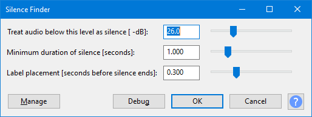

Silence Finder
Silence Finder - Setting Parameters has more help on adjusting the Silence Finder slider settings.
After typing the name of the track or section in each label, will export audio files in one process corresponding to each label's audio. See Splitting a recording into separate tracks.
Silence Finder...
- Accessed by:
- 
{kind=link}
Silence Finder divides up a selection by placing point labels inside areas of silence. Use this if you just want to split the recording into tracks at a specific point without removing the silences between them.
If labels are produced in the middle of album tracks, increase the silence level and duration. If some album tracks do not have a label between them, reduce the silence level and duration. See Setting Parameters for more help choosing values to place the labels correctly.
| If the selection ends with silence, the final label is not placed according to the "Label placement [seconds before silence ends]" setting but is placed after the start of the final silence according to the "Minimum duration of silence [seconds]" setting. |
Buttons
Clicking on the command buttons give the following results:
- gives a dropdown menu enabling you to manage presets for the tool and to see some detail about the tool. For details see Manage presets.
- applies the effect to the selected audio with the current effect settings.
- aborts the effect and leaves the audio unchanged.
 brings you to the appropriate page in the Manual, this page.
brings you to the appropriate page in the Manual, this page.
Examples
See Silence Finder and Sound Finder for examples comparing and contrasting the usage of Silence Finder and Sound Finder.